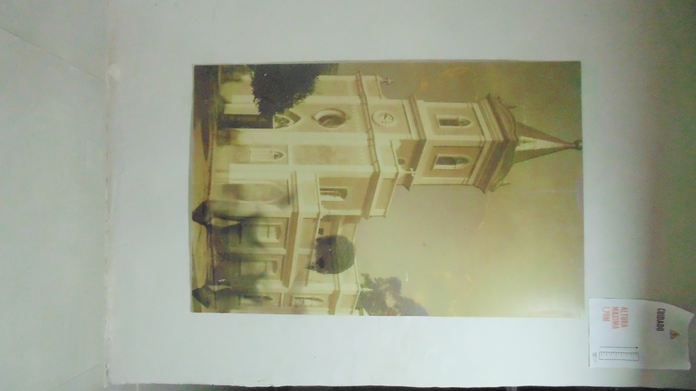
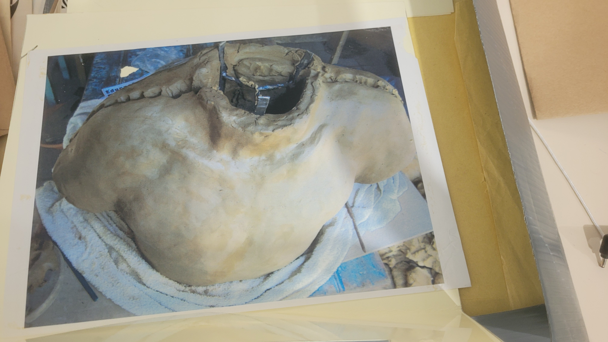
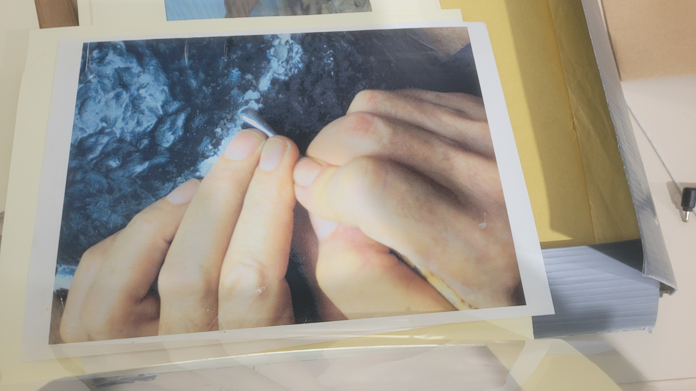
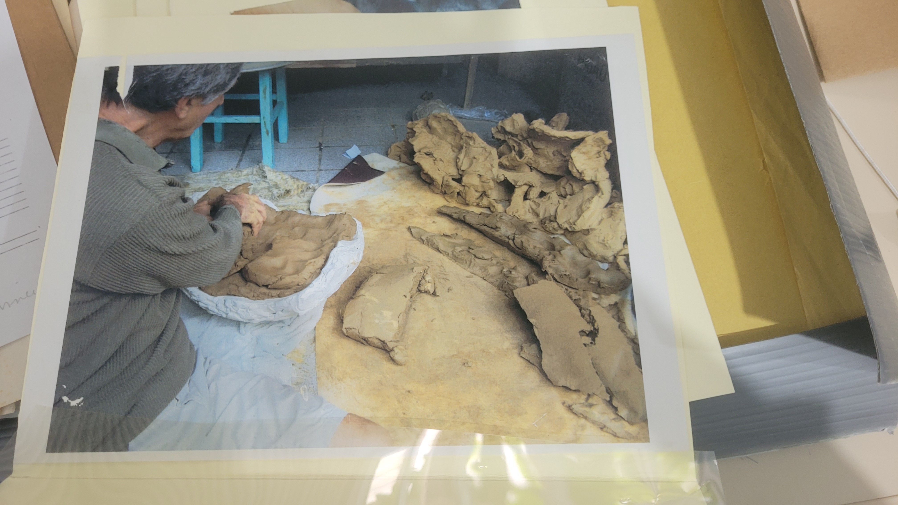
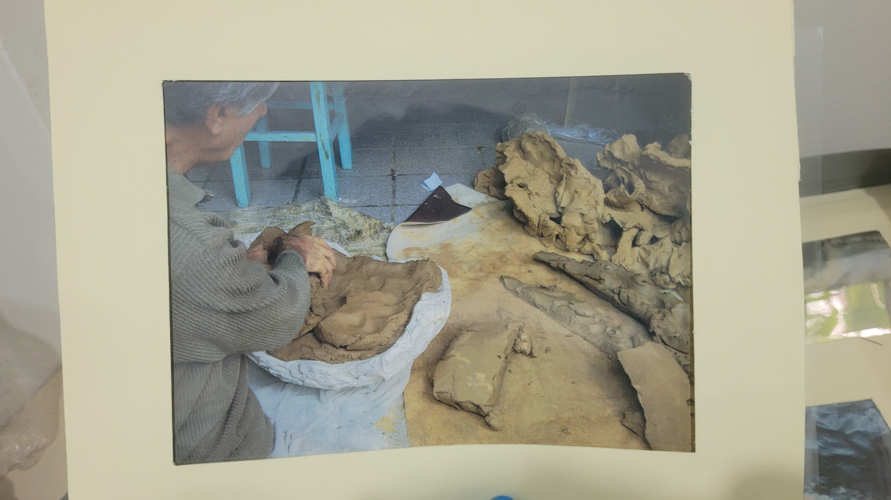
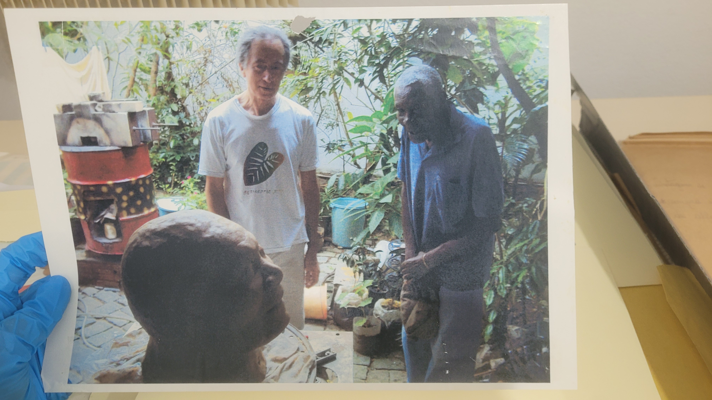
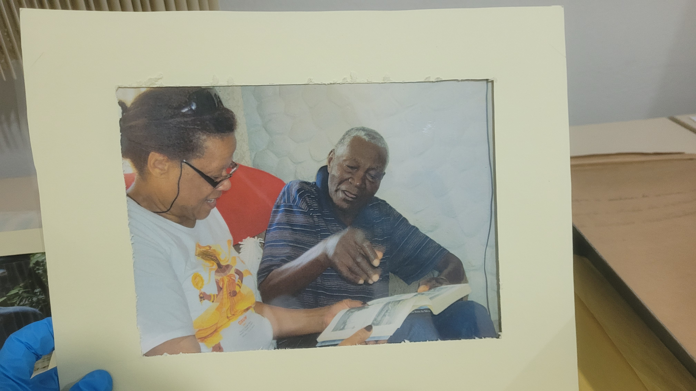
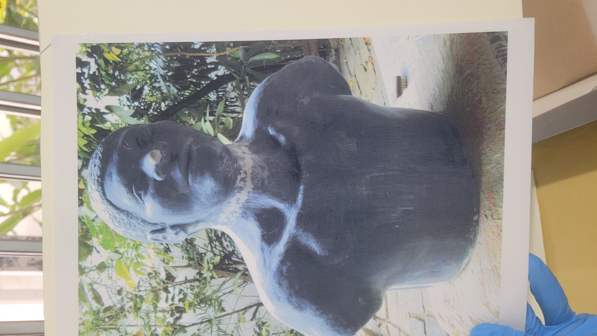

Figura histórica · Memória e resistência
Simeão
Homem negro escravizado no século XIX, cuja memória está ligada à construção da Igreja da Imaculada Conceição, em Itajaí, conhecida como Igrejinha Velha.
Período e contexto Itajaí, século XIX · trabalho escravizado e formação urbana
Trajetória
A história oficial de Itajaí costuma destacar fundadores, administradores e imigrantes. A formação da povoação também dependeu do trabalho de pessoas escravizadas, cujas trajetórias aparecem pouco nos registros. Simeão é uma dessas presenças: seu nome foi preservado sobretudo pela memória associada à construção da primeira igreja da povoação.
Na segunda década do século XIX, durante o início da colonização portuguesa da região, o administrador local Agostinho Alves Ramos designou Simeão, então escravizado por ele, para construir uma igreja. O templo é conhecido como Igreja da Imaculada Conceição, Igrejinha da Imaculada Conceição ou Igrejinha Velha. A reportagem da NSC Total relaciona a construção da igreja ao processo de instalação do povoado.
A capela teve importância religiosa e social. Como Itajaí ainda estava ligada à paróquia de Porto Belo, a presença de um cura — o sacerdote responsável pelo atendimento religioso — era parte do processo de elevação do povoado a curato. Batismos e casamentos eram registrados pela Igreja num período em que Estado e Igreja estavam estreitamente ligados. Assim, a história do templo ajuda a compreender a organização urbana e comunitária da cidade, mas também evidencia o trabalho compulsório que a sustentou.
A memória local associa Simeão ao ofício de pedreiro. Ainda assim, as fontes acessíveis oferecem poucos dados biográficos: não confirmam sua data de nascimento, origem específica, familiares ou outros aspectos de sua vida. Reconhecer essa lacuna evita transformar uma trajetória marcada pelo apagamento em uma biografia inventada.
Atuação e contribuições
A contribuição de Simeão está associada à construção de um dos marcos religiosos mais antigos de Itajaí. A igreja permaneceu como referência para a vida coletiva enquanto a povoação se organizava. Sua história mostra que a formação material da cidade também foi realizada por pessoas escravizadas, embora os registros muitas vezes tenham destacado os administradores e omitido quem executou o trabalho.
Em 2017, o Museu Histórico de Itajaí apresentou a exposição Carne e Pedra: Simeão e a formação da Igrejinha da Imaculada Conceição, durante a 15ª Semana Nacional de Museus. A mostra, aberta de 15 de maio a 31 de agosto, abordou escravidão, relações étnicas, religiosidade e desenvolvimento urbano nos séculos XIX e XX. Por meio de objetos históricos, também discutiu a ocupação negra do espaço urbano. Esses dados constam na cobertura da BC Notícias.
Na ocasião, a diretora do Museu, Evelise Moraes Ribas Wiersinski, chamou atenção para como acervos historicamente formados em torno das classes dominantes produziram lacunas sobre as presenças africanas. A exposição e as pesquisas ligadas a ela ajudam a trazer essas histórias para o debate público e a reconhecer a participação negra na construção de Itajaí.
As pesquisas para representar Simeão em retrato e escultura consideraram referências fenotípicas associadas a povos bantos. Essa representação deve ser entendida como uma interpretação artística: a aparência, por si só, não permite determinar a etnia de uma pessoa, e as fontes consultadas não identificam a origem étnica específica de Simeão.
Registros históricos
As imagens a seguir documentam peças de acervo e o processo contemporâneo de criação da escultura; não são fotografias de Simeão em vida.








Referências e fontes
- NSC Total. “Conheça as origens de Itajaí, a cidade que vive das águas”.
- BC Notícias. Reportagem sobre a 15ª Semana Nacional de Museus e a exposição “Carne e Pedra”.
- Acervo do Museu Histórico de Itajaí: busto e retrato-montagem de Simeão.